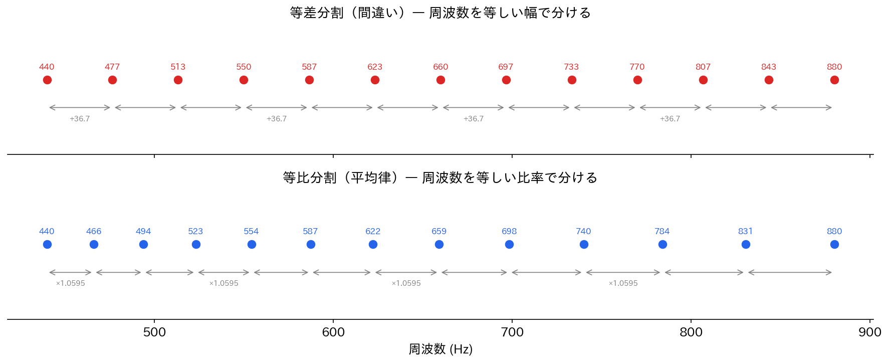
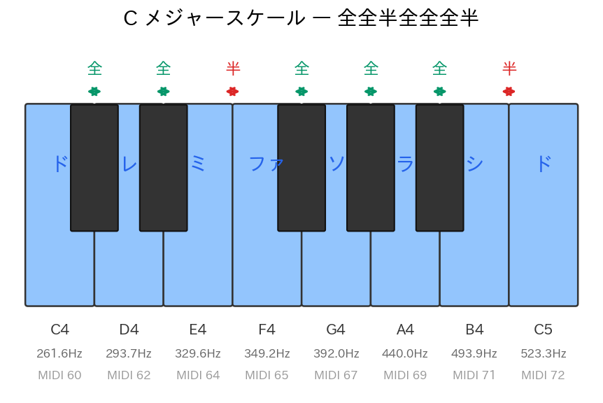
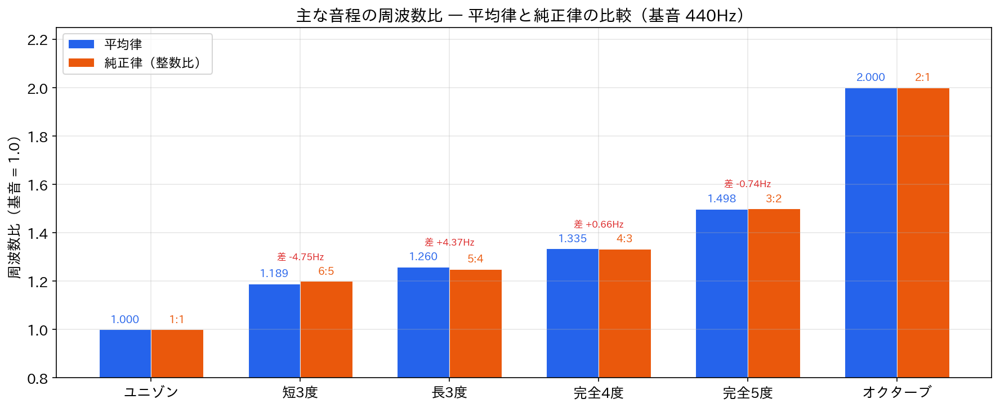
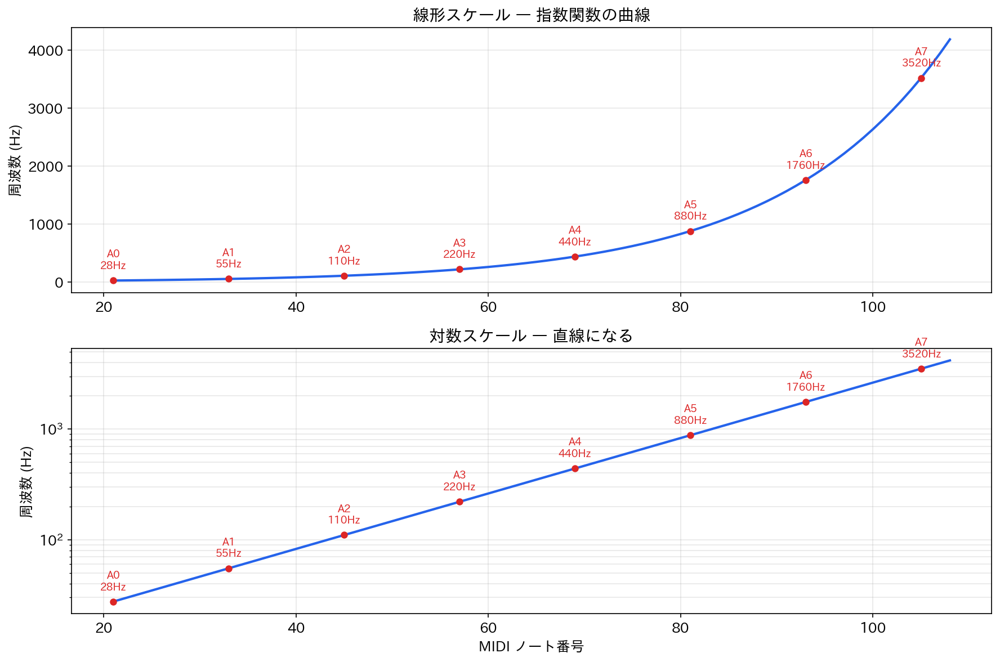

Lesson 6: 音階と周波数¶
このレッスンで学ぶこと¶
- 平均律の仕組みを理解する
- MIDI 番号と周波数の変換式を学ぶ
- 音程と周波数比の関係を理解する
- Python でドレミファソラシドを生成して鳴らす
Lesson 5 では Sonic Pi のフィルターパラメータ cutoff を MIDI 番号で指定しました。「MIDI 番号 60 が C4 で約 262 Hz」「12 上がると周波数が2倍」という目安を使いましたが、なぜそうなるのかは説明しませんでした。このレッスンでは、音階と周波数の関係を数学的に理解します。
6.1 オクターブ — 周波数が2倍で「同じ音」¶
ピアノの鍵盤を思い浮かべてください。低い「ド」と1オクターブ上の「ド」は、高さは違いますが「同じド」として扱われます。この「同じ」感覚の正体は、周波数がちょうど2倍の関係にあることです。
import numpy as np
from IPython.display import display
from audio_lib import sine_wave
from audio_lib.notebook import play_sound
# A4（440Hz）と A5（880Hz）を聞き比べる
display(play_sound(sine_wave(440, 1.5), "A4: 440 Hz"))
display(play_sound(sine_wave(880, 1.5), "A5: 880 Hz（1オクターブ上）"))
display(play_sound(sine_wave(220, 1.5), "A3: 220 Hz（1オクターブ下）"))
440 Hz → 880 Hz → 1760 Hz → … と、周波数が2倍になるたびに1オクターブ上がります。逆に 440 Hz → 220 Hz → 110 Hz → … と半分になるたびに1オクターブ下がります。
この「2倍で同じ音に聞こえる」性質をオクターブの等価性と呼びます。これは人間の聴覚の基本的な特性で、文化や時代を超えてほぼ普遍的に認められています。
6.2 平均律 — オクターブを12等分する¶
問題: オクターブの間をどう分ける？¶
1オクターブ（周波数比 2:1）の間に、ピアノの鍵盤では白鍵7つと黒鍵5つ、合計12の音が並んでいます。この12音をどう配置するかが音律（temperament）の問題です。
現在もっとも広く使われているのが12平均律（12-tone equal temperament）です。12平均律は、1オクターブを周波数比で12等分します。
「12等分」は等差でなく等比¶
ここで注意が必要です。「12等分」は周波数を等しい幅で分ける（等差）のではなく、等しい比率で分ける（等比） ことを意味します。
# 等差分割（間違い）と等比分割（正しい）の比較
f_low = 440 # A4
f_high = 880 # A5
# 等差分割: 440, 476.7, 513.3, ..., 880（等間隔に足す）
equal_add = np.linspace(f_low, f_high, 13)
# 等比分割: 440 × r^0, 440 × r^1, ..., 440 × r^12（等比率でかける）
r = 2 ** (1/12)
equal_mul = f_low * r ** np.arange(13)
print("等差分割（間違い）:")
print(" ", [f"{f:.1f}" for f in equal_add])
print()
print("等比分割（平均律）:")
print(" ", [f"{f:.1f}" for f in equal_mul])
なぜ等比分割なのでしょうか。図6.1 を見てください。

等差分割（上）では点が等間隔に並びますが、等比分割（下）では低音域で間隔が狭く、高音域で広くなります。もし等差分割を採用すると、低い音域と高い音域で半音の「聞こえ方」が異なってしまいます。人間の聴覚は周波数の比率に対して等しい音程感覚を持つため、等比分割が自然なのです。
半音比 \(r = \sqrt[12]{2}\)¶
1オクターブで周波数が2倍になるように12等分するには、隣り合う半音の周波数比 \(r\) が次の条件を満たす必要があります。
したがって:
つまり、半音上がるごとに周波数が約 5.946% 増加します。
6.3 MIDI ノート番号¶
MIDI 番号とは¶
MIDI（Musical Instrument Digital Interface）は電子楽器やコンピュータ間で音楽情報をやり取りするための規格です。MIDI では各音に 0〜127 の整数（ノート番号）を割り当てています。
| MIDI 番号 | 音名 | 周波数 |
|---|---|---|
| 21 | A0 | 27.5 Hz |
| 60 | C4（中央のド） | 261.6 Hz |
| 69 | A4 | 440.0 Hz |
| 72 | C5 | 523.3 Hz |
| 108 | C8 | 4186.0 Hz |
基準音は A4 = MIDI 番号 69 = 440 Hz です。
変換式¶
MIDI 番号 \(n\) から周波数 \(f\) への変換は、平均律の定義そのものです。
この式の意味を分解しましょう。
- \(n - 69\): A4（MIDI 69）から何半音離れているか
- \((n - 69) / 12\): それが何オクターブに相当するか
- \(2^{(n-69)/12}\): 周波数比
- \(440 \times \ldots\): A4 = 440 Hz を基準にかける
from audio_lib import note_to_frequency
# いくつかの MIDI 番号で確認
for midi_num in [60, 69, 72, 81]:
freq = note_to_frequency(midi_num)
print(f"MIDI {midi_num:3d} → {freq:8.2f} Hz")
逆変換（周波数 → MIDI 番号）は対数を使います。
from audio_lib import frequency_to_note
# 周波数から MIDI 番号を求める
for freq in [261.6, 440.0, 523.3, 880.0]:
midi_num = frequency_to_note(freq)
print(f"{freq:8.1f} Hz → MIDI {midi_num}")
変換式を自分で書いてみる¶
audio_lib の関数を使う前に、変換式を自分で実装してみましょう。
def midi_to_freq(note_number):
"""MIDI ノート番号を周波数に変換"""
return 440.0 * (2.0 ** ((note_number - 69) / 12.0))
def freq_to_midi(frequency):
"""周波数を MIDI ノート番号に変換（四捨五入）"""
return round(12 * np.log2(frequency / 440.0) + 69)
# 検算
print(f"MIDI 69 → {midi_to_freq(69):.1f} Hz（A4 = 440 Hz）")
print(f"MIDI 60 → {midi_to_freq(60):.1f} Hz（C4）")
print(f"440 Hz → MIDI {freq_to_midi(440)}（A4）")
print(f"262 Hz → MIDI {freq_to_midi(262)}（C4）")
6.4 Python でドレミファソラシドを鳴らす¶
変換式を使って、C メジャースケール（ドレミファソラシド）を生成してみましょう。
MIDI 番号からスケールを作る¶
C メジャースケール（長音階）の音程構造は「全全半全全全半」です。半音を1単位とすると、C4（MIDI 60）からの間隔は次のようになります。
| 音名 | ド | レ | ミ | ファ | ソ | ラ | シ | ド |
|---|---|---|---|---|---|---|---|---|
| 間隔（半音） | 0 | 2 | 4 | 5 | 7 | 9 | 11 | 12 |
| MIDI 番号 | 60 | 62 | 64 | 65 | 67 | 69 | 71 | 72 |

from audio_lib import note_to_frequency, sine_wave
from audio_lib.notebook import play_sound
# C メジャースケールの MIDI 番号
c_major = [60, 62, 64, 65, 67, 69, 71, 72]
note_names = ["ド", "レ", "ミ", "ファ", "ソ", "ラ", "シ", "ド"]
dur = 0.5 # 各音の長さ（秒）
for midi_num, name in zip(c_major, note_names):
freq = note_to_frequency(midi_num)
sig = sine_wave(freq, dur)
display(play_sound(sig, f"{name}（MIDI {midi_num}, {freq:.1f} Hz）"))
スケールを1つの音声としてつなげる¶
個別に再生する代わりに、音を連結して1つの音声ファイルにしましょう。
from audio_lib import AudioSignal
sample_rate = 44100
dur = 0.4
# 各音をサイン波で生成し、連結する
parts = []
for midi_num in c_major:
freq = note_to_frequency(midi_num)
sig = sine_wave(freq, dur)
parts.append(sig.data)
# NumPy 配列を連結して1つの AudioSignal にする
scale_data = np.concatenate(parts)
scale_signal = AudioSignal(scale_data, sample_rate)
display(play_sound(scale_signal, "C メジャースケール"))
周波数の確認¶
スケールの各音の周波数を一覧で確認しましょう。隣り合う音の周波数比にも注目します。
print(f"{'音名':>4} {'MIDI':>4} {'周波数':>10} {'前の音との比':>12}")
print("-" * 38)
prev_freq = None
for midi_num, name in zip(c_major, note_names):
freq = note_to_frequency(midi_num)
if prev_freq is not None:
ratio = freq / prev_freq
print(f"{name:>4} {midi_num:>4} {freq:>10.2f} Hz {ratio:>10.5f}")
else:
print(f"{name:>4} {midi_num:>4} {freq:>10.2f} Hz {'---':>10}")
prev_freq = freq
全音（2半音）の周波数比は \(r^2 = 2^{2/12} = 2^{1/6} \approx 1.1225\) 、半音（1半音）の周波数比は \(r = 2^{1/12} \approx 1.0595\) です。ミ→ファとシ→ドだけ半音であることが、比率からも確認できます。
6.5 音程と周波数比¶
主な音程の周波数比¶
音楽で使う音程（インターバル）は、平均律では次のような周波数比になります。
| 音程 | 半音数 | 周波数比 \(2^{n/12}\) | 近似的な整数比 |
|---|---|---|---|
| ユニゾン | 0 | 1.000 | 1:1 |
| 短3度 | 3 | 1.189 | 6:5 (1.200) |
| 長3度 | 4 | 1.260 | 5:4 (1.250) |
| 完全4度 | 5 | 1.335 | 4:3 (1.333) |
| 完全5度 | 7 | 1.498 | 3:2 (1.500) |
| オクターブ | 12 | 2.000 | 2:1 (2.000) |
intervals = [
("ユニゾン", 0, "1:1"),
("短3度", 3, "6:5"),
("長3度", 4, "5:4"),
("完全4度", 5, "4:3"),
("完全5度", 7, "3:2"),
("オクターブ", 12, "2:1"),
]
print(f"{'音程':<10} {'半音数':>4} {'平均律の比':>10} {'整数比':>6}")
print("-" * 38)
for name, semitones, ratio_str in intervals:
ratio = 2 ** (semitones / 12)
print(f"{name:<10} {semitones:>4} {ratio:>10.5f} {ratio_str:>6}")

平均律と純正律のずれ¶
表の右列「近似的な整数比」は純正律（just intonation）の音程です。純正律は周波数比がきれいな整数比になるように音を配置する音律で、和音が非常に美しく響きます。
しかし、平均律の周波数比は純正律の整数比とわずかにずれています。このずれを聞いてみましょう。
f0 = 440 # A4
# 完全5度（A4 → E5）
f_equal = f0 * 2 ** (7/12) # 平均律: 659.26 Hz
f_just = f0 * 3 / 2 # 純正律: 660.00 Hz
print(f"完全5度: 平均律 {f_equal:.2f} Hz / 純正律 {f_just:.2f} Hz")
print(f"差: {abs(f_equal - f_just):.2f} Hz")
display(play_sound(sine_wave(f_equal, 2.0), f"平均律の完全5度: {f_equal:.1f} Hz"))
display(play_sound(sine_wave(f_just, 2.0), f"純正律の完全5度: {f_just:.1f} Hz"))
完全5度は差がわずか 0.74 Hz でほとんど区別がつきません。しかし長3度では差がもっと大きくなります。
# 長3度（A4 → C#5）
f_equal_3 = f0 * 2 ** (4/12) # 平均律: 554.37 Hz
f_just_3 = f0 * 5 / 4 # 純正律: 550.00 Hz
print(f"長3度: 平均律 {f_equal_3:.2f} Hz / 純正律 {f_just_3:.2f} Hz")
print(f"差: {abs(f_equal_3 - f_just_3):.2f} Hz")
display(play_sound(sine_wave(f_equal_3, 2.0), f"平均律の長3度: {f_equal_3:.1f} Hz"))
display(play_sound(sine_wave(f_just_3, 2.0), f"純正律の長3度: {f_just_3:.1f} Hz"))
なぜ平均律が広く使われるのか¶
純正律は和音がきれいに響きますが、転調（調を変える）すると一部の音程が崩れるという問題があります。平均律はすべての半音の比率が等しいため、どの調でも同じように演奏できます。このトレードオフの結果、現代の音楽のほとんどは平均律を採用しています。
6.6 音名と MIDI 番号の対応¶
audio_lib には音名（文字列）と MIDI 番号を相互変換する関数もあります。
from audio_lib import note_name_to_number, number_to_note_name
# 音名 → MIDI 番号
for name in ["C4", "A4", "G#3", "Bb5"]:
num = note_name_to_number(name)
print(f"{name:>4} → MIDI {num}")
print()
# MIDI 番号 → 音名
for num in [60, 69, 72, 48]:
name = number_to_note_name(num)
print(f"MIDI {num} → {name}")
ピアノの全鍵盤と周波数¶
ピアノの鍵盤（A0〜C8）の周波数を一覧にしてみましょう。
import matplotlib.pyplot as plt
# ピアノの範囲: A0 (MIDI 21) 〜 C8 (MIDI 108)
midi_range = np.arange(21, 109)
freqs = [note_to_frequency(n) for n in midi_range]
plt.figure(figsize=(12, 5))
plt.plot(midi_range, freqs)
plt.xlabel("MIDI ノート番号")
plt.ylabel("周波数 (Hz)")
plt.title("MIDI ノート番号と周波数の関係")
plt.grid(True, alpha=0.3)
# オクターブごとに印をつける
for midi_num in [21, 33, 45, 57, 69, 81, 93, 105]:
freq = note_to_frequency(midi_num)
name = number_to_note_name(midi_num)
plt.annotate(f"{name}\n{freq:.0f}Hz", (midi_num, freq),
textcoords="offset points", xytext=(0, 10),
ha='center', fontsize=8)
plt.tight_layout()
plt.show()
グラフは直線ではなく指数関数の曲線を描きます（図6.2 上）。MIDI 番号が等間隔（線形）でも、周波数は等比的に増加するためです。
対数スケールで見ると¶
縦軸を対数スケールにすると直線になります（図6.2 下）。
plt.figure(figsize=(12, 5))
plt.semilogy(midi_range, freqs)
plt.xlabel("MIDI ノート番号")
plt.ylabel("周波数 (Hz)")
plt.title("MIDI ノート番号と周波数の関係（対数スケール）")
plt.grid(True, alpha=0.3, which='both')
plt.tight_layout()
plt.show()

対数スケールでは等比の関係が等間隔に見えるため、直線になります。MIDI 番号の設計が平均律（等比分割）と完全に対応していることが視覚的にわかります。
6.7 Lesson 5 の cutoff を振り返る¶
Lesson 5 で使った cutoff パラメータは、カットオフ周波数を MIDI 番号で指定するものでした。いくつかの値を変換式で確認しましょう。
print("Lesson 5 で使った cutoff の値:")
print(f"{'cutoff':>8} {'周波数':>10} {'音名':>6}")
print("-" * 30)
for cutoff in [60, 80, 100, 120, 130]:
freq = note_to_frequency(cutoff)
name = number_to_note_name(cutoff)
print(f"{cutoff:>8} {freq:>10.1f} Hz {name:>6}")
cutoff: 60 が C4（262 Hz）、cutoff: 80 が G#5（831 Hz）に対応することが、変換式で正確にわかるようになりました。Sonic Pi が cutoff を MIDI 番号で指定する設計にしているのは、MIDI 番号なら等間隔の変化が聴覚的にも等間隔に感じられるからです。
まとめ¶
このレッスンで学んだことを整理します。
| 概念 | 内容 |
|---|---|
| オクターブ | 周波数が2倍の関係。「同じ音」に聞こえる |
| 12平均律 | オクターブを周波数比で12等分する音律 |
| 半音比 | \(r = 2^{1/12} \approx 1.05946\) |
| MIDI ノート番号 | 各音に 0〜127 の整数を割り当てる規格。A4 = 69 |
| 変換式 | \(f = 440 \times 2^{(n-69)/12}\) |
| 純正律 | 周波数比がきれいな整数比になる音律。和音が美しいが転調に弱い |
使った audio_lib の関数¶
| 関数 | 役割 |
|---|---|
note_to_frequency(midi_num) |
MIDI 番号 → 周波数 |
frequency_to_note(freq) |
周波数 → MIDI 番号 |
note_name_to_number(name) |
音名（"C4" など）→ MIDI 番号 |
number_to_note_name(midi_num) |
MIDI 番号 → 音名 |
Lesson 5 との対応¶
| Lesson 5（Sonic Pi） | Lesson 6（Python） |
|---|---|
cutoff: 80 のように MIDI 番号で指定 |
MIDI 番号と周波数の変換式を理解 |
| MIDI 12 上がると周波数2倍（目安） | \(r^{12} = 2\) から導出 |
:c4, :a4 のような音名 |
音名と MIDI 番号の対応関係 |
次回予告¶
Lesson 7 では Sonic Pi に戻り、ここで学んだ音階の知識を使ってメロディとコードを演奏します。scale、chord、リングなどの Sonic Pi の機能を学び、和音の響き（協和/不協和、メジャー/マイナーの違い）も聴いて体験します。